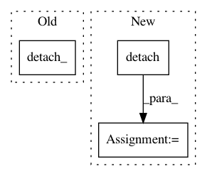

8fe38e41ac6f96d6e61d1bed5a0a15e77c8ebf61,gpytorch/lazy/interpolated_lazy_variable.py,InterpolatedLazyVariable,exact_predictive_covar,#InterpolatedLazyVariable#Any#Any#Any#,304
Before Change
inside = self.base_lazy_variable + RootLazyVariable(root).mul(-1)
inside_root = inside.root_decomposition()
// Prevent backprop through this variable
inside_root.detach_()
precomputed_cache = inside_root, None
else:
// Prevent backprop through this variable
root.detach_()
After Change
inside = self.base_lazy_variable + RootLazyVariable(root).mul(-1)
inside_root = inside.root_decomposition()
// Prevent backprop through this variable
inside_root = inside_root.detach()
precomputed_cache = inside_root, None
else:
// Prevent backprop through this variable
root = root.detach()
In pattern: SUPERPATTERN
Frequency: 3
Non-data size: 3
Instances
Project Name: cornellius-gp/gpytorch
Commit Name: 8fe38e41ac6f96d6e61d1bed5a0a15e77c8ebf61
Time: 2018-03-08
Author: sgross@fb.com
File Name: gpytorch/lazy/interpolated_lazy_variable.py
Class Name: InterpolatedLazyVariable
Method Name: exact_predictive_covar
Project Name: cornellius-gp/gpytorch
Commit Name: 8fe38e41ac6f96d6e61d1bed5a0a15e77c8ebf61
Time: 2018-03-08
Author: sgross@fb.com
File Name: gpytorch/lazy/interpolated_lazy_variable.py
Class Name: InterpolatedLazyVariable
Method Name: exact_predictive_mean
Project Name: silvandeleemput/memcnn
Commit Name: 8e12624641eab7a7e73497ea96124bb39aca1c01
Time: 2020-03-04
Author: ce377@orthosie.damtp.cam.ac.uk
File Name: memcnn/models/revop.py
Class Name: InvertibleCheckpointFunction
Method Name: forward